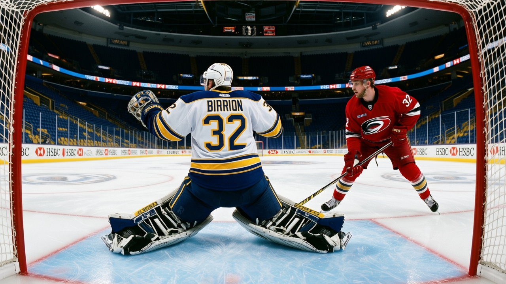
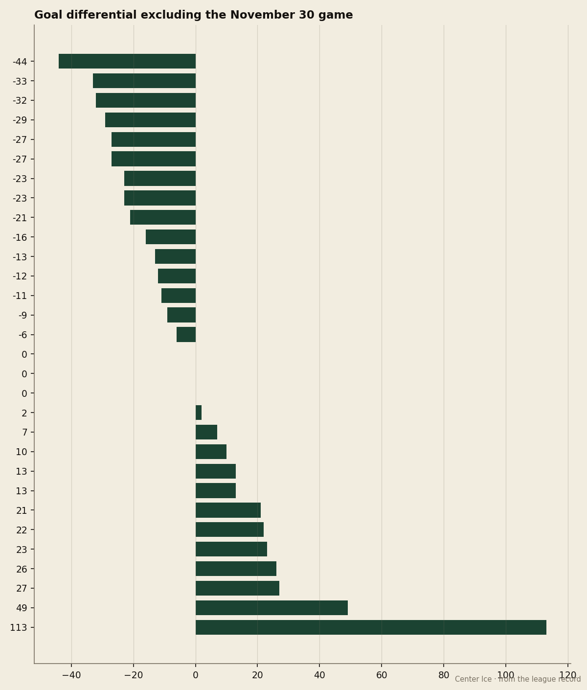

The Bubble Watch: Martin Biron has a 4.33 goals-against average, and Buffalo is 7th in the East
One night in November accounts for 13 of Buffalo's 16 negative points of goal differential. The four-game win streak says the rest of the record is real.
 Howard BlaineSenior writer, The Blaine Rankings · The Hockey Gazette
Howard BlaineSenior writer, The Blaine Rankings · The Hockey Gazette
 Martin Biron89 has given up 4.33 goals a game this season, the worst figure among every goaltender in the league who has played at least five games. The
Martin Biron89 has given up 4.33 goals a game this season, the worst figure among every goaltender in the league who has played at least five games. The  Buffalo Sabres Sabres are 15-14-3, 41 points, 7th in the Eastern Conference, and they have won four in a row. The two facts sit beside each other without resolving.
Buffalo Sabres Sabres are 15-14-3, 41 points, 7th in the Eastern Conference, and they have won four in a row. The two facts sit beside each other without resolving.
The standings at Christmas are the standings in April, and I have said it before in this space. Buffalo is in a playoff spot. The question that matters in January is whether the record is a fraud or whether the 4.33 GAA is one. I think the record is closer to the truth.

The goal differential tells the story poorly. Buffalo is at -16 for the season, 10th-worst in the league. Strip the 0-13 loss to Toronto on November 30 from the record and the Sabres have scored 141 and allowed 144 in 35 games, a differential of -3. One evening of hockey accounts for the bulk of the gap between a team that looks out of its depth and a team that is roughly .500 hockey.
That correction changes how you read the 41 points. A -16 differential suggests a team riding luck, winning one-goal games it should lose. A -3 differential suggests a team grinding out close ones and losing blowouts it cannot control. Buffalo's points per game is 1.139, which sits between  Colorado Avalanche and
Colorado Avalanche and  Vancouver Canucks in that column, and their three overtime losses mean they have walked off with 3 points from games they could easily have walked off with zero.
Vancouver Canucks in that column, and their three overtime losses mean they have walked off with 3 points from games they could easily have walked off with zero.
Biron's numbers and the room behind him
The goaltending is what draws the eye. Biron is 13-14-0 with a .816 save percentage and 31 games played. His overall grade in the Book is 85, which is not a bad grade, but it is not the grade of a goaltender whose team should be outscored by 4.33 a night. The 0-13 on November 30 is one-third of the 13 goals that game produced against Buffalo's season total. Biron allowed all 13. Remove it and his goals-against average shifts, but even without it the remaining numbers are not good enough for a playoff team to lean on through April.
Buffalo does not have a top-30 scorer. Their leading point man is  Tim Connolly79, 23 years old, 23 points in 36 games, 18.4 minutes a night. He sits 33rd on the under-23 list by overall grade. The offense is distributed, and it is adequate: 141 goals in 36 games, and yet enough to be in a playoff spot because the team has found a way to keep the games close.
Tim Connolly79, 23 years old, 23 points in 36 games, 18.4 minutes a night. He sits 33rd on the under-23 list by overall grade. The offense is distributed, and it is adequate: 141 goals in 36 games, and yet enough to be in a playoff spot because the team has found a way to keep the games close.
The last ten games tell a different story than the season line
Buffalo's last 10 read WWWWOTLWLOTLWW. Six regulation wins, two overtime losses, one regulation loss, one overtime win. Fourteen points in 10 games is a 1.40 pace, which is a top-eight team in this league. The four-game win streak heading into the new year has them at 41, four points ahead of Boston  Boston Bruins and one point ahead of Ottawa
Boston Bruins and one point ahead of Ottawa  Ottawa Senators, the 8th seed.
Ottawa Senators, the 8th seed.
The schedule in the coming week is reasonable. Carolina  Carolina Hurricanes visits Buffalo on January 3. Then they travel to Ottawa on January 4 and Philadelphia
Carolina Hurricanes visits Buffalo on January 3. Then they travel to Ottawa on January 4 and Philadelphia  Philadelphia Flyers on January 7. Two of those three opponents are behind them in the standings. Ottawa is 40 points on a 2-game win streak, so the Sabres cannot coast into that game, but the geography of the week works.
Philadelphia Flyers on January 7. Two of those three opponents are behind them in the standings. Ottawa is 40 points on a 2-game win streak, so the Sabres cannot coast into that game, but the geography of the week works.
Why the standings hold
My view is that a team winning 4 straight going into January with a realistic schedule does not simply stop. Buffalo's payroll is $44.16M, their cost per point is $1.08M, and they have turned a profit of $19.40M on $45.66M in revenue. They are spending modestly and getting production. The room has no star and no 90-grade goaltender, and on paper it has no business being in a playoff spot. But the paper says they are there, and the paper does not care about the 4.33 GAA.
The 4.33 is a problem. If Biron does not climb back toward his 85-grade abilities, the Sabres will need the offense to carry them through February and March, and 141 goals in 36 games is not enough against the teams that will be healthy in the second half. But the -16 is a lie, or at least an exaggeration. The Sabres are closer to a .500 team in a 15-club conference than the differential suggests, and a .500 team with a schedule that breaks even is a team that makes the last seed.
I logged no prediction on Buffalo in December. I am logging one now.